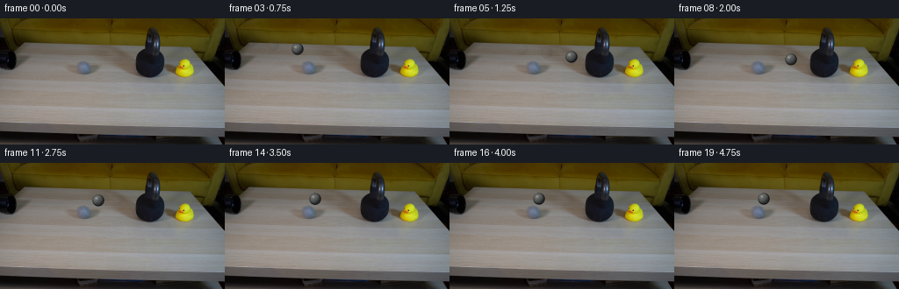
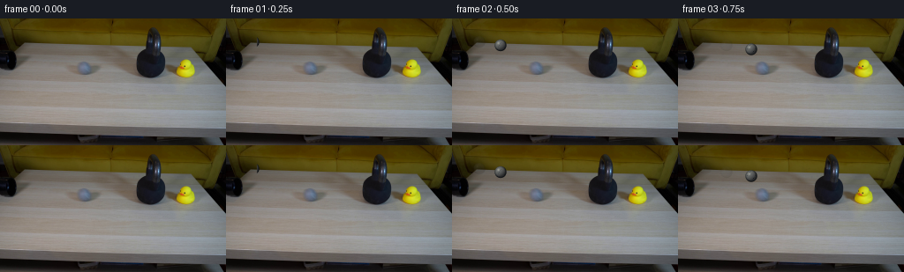
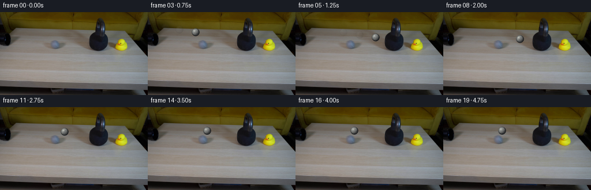

CODING AGENTS AS PIXEL WORLD MODELS
traex/DeepSeek-V4.1-Flash · 0197
点击播放 · 原生 RGB 像素
逐轮保存的候选
回放视频、检查图与代码变化。
每份候选均可单独播放。实际图片检查记录在下方工具轨迹中。
候选 01播放与检查图
点击播放 · 原生 RGB 像素


展开代码变化
--- 上一保存版本
+++ 本次保存版本
@@ -0,0 +1,210 @@
+from pathlib import Path
+
+import numpy as np
+from PIL import Image
+
+import artifact_io
+
+
+CASE_DIR = Path(__file__).resolve().parent
+N_FRAMES = 20
+WIDTH = 256
+HEIGHT = 144
+
+
+# Screen-space path from the pipe mouth to the lower-left side of the kettlebell.
+# The slight downward slope follows the perspective of the tabletop.
+BALL_CENTERS = np.array(
+ [
+ (35.0, 27.4), # hidden inside the pipe mouth
+ (31.0, 26.6), # first sliver visible
+ (55.0, 30.5),
+ (83.0, 35.0),
+ (111.0, 39.5),
+ (139.0, 44.0),
+ (147.6, 49.5), # contact
+ (141.0, 48.2), # rebound
+ (133.0, 46.8),
+ (125.0, 45.3),
+ (118.0, 44.0),
+ (112.0, 42.9),
+ (108.0, 42.1),
+ (105.0, 41.6),
+ (103.0, 41.2),
+ (102.0, 41.0),
+ (102.0, 41.0),
+ (102.0, 41.0),
+ (102.0, 41.0),
+ (102.0, 41.0),
+ ],
+ dtype=np.float64,
+)
+
+
+def _smoothstep(edge0, edge1, values):
+ t = np.clip((values - edge0) / (edge1 - edge0), 0.0, 1.0)
+ return t * t * (3.0 - 2.0 * t)
+
+
+def _ball_layer(cx, cy, radius, roll_angle, squash_x=1.0, squash_y=1.0):
+ """Render an anti-aliased shaded tennis ball as RGBA floats."""
+ pad = int(np.ceil(radius * max(squash_x, squash_y) + 3))
+ x0 = max(0, int(np.floor(cx)) - pad)
+ x1 = min(WIDTH, int(np.ceil(cx)) + pad + 1)
+ y0 = max(0, int(np.floor(cy)) - pad)
+ y1 = min(HEIGHT, int(np.ceil(cy)) + pad + 1)
+ yy, xx = np.mgrid[y0:y1, x0:x1].astype(np.float64)
+
+ sx = radius * squash_x
+ sy = radius * squash_y
+ dx = (xx + 0.5 - cx) / sx
+ dy = (yy + 0.5 - cy) / sy
+ rr = np.hypot(dx, dy)
+ coverage = np.clip((1.0 - rr) * min(sx, sy) + 0.55, 0.0, 1.0)
+
+ z = np.sqrt(np.clip(1.0 - dx * dx - dy * dy, 0.0, 1.0))
+ light = np.array([-0.48, -0.58, 0.66], dtype=np.float64)
+ light /= np.linalg.norm(light)
+ diffuse = np.clip(dx * light[0] + dy * light[1] + z * light[2], 0.0, 1.0)
+
+ # Soft key light, cool bounce from the table, and a restrained felt texture.
+ key = 0.34 + 0.66 * diffuse
+ rim = np.clip((rr - 0.72) / 0.28, 0.0, 1.0)
+ texture = (
+ 0.55 * np.sin(xx * 2.19 + yy * 1.37 + roll_angle * 0.73)
+ + 0.30 * np.sin(xx * 0.71 - yy * 2.51 - roll_angle * 1.17)
+ + 0.15 * np.sin(xx * 4.03 + yy * 3.17)
+ )
+ fuzz = 1.0 + 0.025 * texture
+
+ base = np.empty((*dx.shape, 3), dtype=np.float64)
+ base[..., 0] = 103.0
+ base[..., 1] = 105.0
+ base[..., 2] = 99.0
+ base *= (key * fuzz)[..., None]
+ base[..., 2] += 5.0 * np.clip(z, 0.0, 1.0)
+ base += (1.0 - rim)[..., None] * np.array([8.0, 8.0, 7.0])
+ base -= rim[..., None] * np.array([24.0, 22.0, 18.0])
+
+ # A rotated, narrow seam gives the small ball a readable rolling surface.
+ longitude = np.arctan2(dx, np.maximum(z, 0.10))
+ latitude = np.arcsin(np.clip(dy, -1.0, 1.0))
+ seam_wave = np.sin(2.15 * longitude + 1.35 * latitude + roll_angle)
+ seam = np.exp(-((seam_wave / 0.085) ** 2)) * _smoothstep(0.05, 0.45, z)
+ base -= seam[..., None] * np.array([24.0, 22.0, 18.0])
+
+ highlight = np.exp(
+ -(((dx + 0.34) / 0.20) ** 2 + ((dy + 0.36) / 0.20) ** 2)
+ ) * (z > 0.30)
+ base += highlight[..., None] * np.array([47.0, 46.0, 41.0])
+
+ alpha = coverage
+ return base, alpha, (x0, y0, x1, y1)
+
+
+def _composite_rgba(frame, rgb, alpha, bounds, opacity=1.0):
+ x0, y0, x1, y1 = bounds
+ if x1 <= x0 or y1 <= y0:
+ return
+ a = np.clip(alpha * opacity, 0.0, 1.0)[..., None]
+ region = frame[y0:y1, x0:x1].astype(np.float64)
+ frame[y0:y1, x0:x1] = np.clip(
+ rgb * a + region * (1.0 - a) + 0.5, 0.0, 255.0
+ ).astype(np.uint8)
+
+
+def _draw_shadow(frame, cx, cy, radius, opacity):
+ pad = int(np.ceil(radius * 2.0))
+ x0 = max(0, int(np.floor(cx)) - pad)
+ x1 = min(WIDTH, int(np.ceil(cx)) + pad + 1)
+ y0 = max(0, int(np.floor(cy)) - pad)
+ y1 = min(HEIGHT, int(np.ceil(cy)) + pad + 1)
+ yy, xx = np.mgrid[y0:y1, x0:x1].astype(np.float64)
+ ex = (xx + 0.5 - (cx + 0.8)) / (radius * 1.28)
+ ey = (yy + 0.5 - (cy + radius * 0.72)) / (radius * 0.42)
+ shadow = np.exp(-1.75 * (ex * ex + ey * ey))
+
+ # Keep the contact shadow on the table rather than painting over dark objects.
+ region = frame[y0:y1, x0:x1].astype(np.float64)
+ luminance = region.mean(axis=2)
+ table_weight = _smoothstep(35.0, 85.0, luminance)
+ a = (shadow * opacity * table_weight)[..., None]
+ frame[y0:y1, x0:x1] = np.clip(
+ region * (1.0 - 0.34 * a) + np.array([31.0, 27.0, 23.0]) * a + 0.5,
+ 0.0,
+ 255.0,
+ ).astype(np.uint8)
+
+
+def _draw_ball(frame, frame_index, base):
+ cx, cy = BALL_CENTERS[frame_index]
+ if frame_index == 0:
+ return
+
+ distance = np.linalg.norm(BALL_CENTERS[frame_index] - BALL_CENTERS[1])
+ roll_angle = distance / 6.6
+
+ speed = np.linalg.norm(BALL_CENTERS[frame_index] - BALL_CENTERS[frame_index - 1])
+ if speed > 12.0:
+ for ghost_index, weight in ((2, 0.055), (1, 0.085)):
+ source = max(1, frame_index - ghost_index)
+ gx, gy = BALL_CENTERS[source]
+ rgb, alpha, bounds = _ball_layer(gx, gy, 6.6, roll_angle - ghost_index * 0.7)
+ _composite_rgba(frame, rgb, alpha, bounds, opacity=weight)
+
+ _draw_shadow(frame, cx, cy, 6.6, 0.48 if frame_index < 16 else 0.34)
+
+ squash_x = 1.0
+ squash_y = 1.0
+ if frame_index == 6:
+ squash_x, squash_y = 0.86, 1.07
+ elif frame_index == 7:
+ squash_x, squash_y = 0.94, 1.03
+
+ rgb, alpha, bounds = _ball_layer(cx, cy, 6.6, roll_angle, squash_x, squash_y)
+ if frame_index <= 2:
+ yy, xx = np.mgrid[bounds[1]:bounds[3], bounds[0]:bounds[2]]
+ mouth_clip = _smoothstep(34.2, 36.0, xx + 0.5)
+ alpha = alpha * mouth_clip
+ _composite_rgba(frame, rgb, alpha, bounds)
+
+ if frame_index in (6, 7):
+ # A brief specular glint at the contact edge, not a graphic impact effect.
+ x0, x1 = 151, 158
+ y0, y1 = 46, 53
+ yy, xx = np.mgrid[y0:y1, x0:x1].astype(np.float64)
+ glow = np.exp(-(((xx - 154.2) / 1.4) ** 2 + ((yy - 49.2) / 1.9) ** 2))
+ weight = glow * (0.24 if frame_index == 6 else 0.10)
+ region = frame[y0:y1, x0:x1].astype(np.float64)
+ frame[y0:y1, x0:x1] = np.clip(
+ region + weight[..., None] * np.array([38.0, 35.0, 29.0]), 0.0, 255.0
+ ).astype(np.uint8)
+
+ # Contact compression darkens the nearest bell edge for one beat.
+ x0, x1 = 153, 160
+ y0, y1 = 44, 55
+ yy, xx = np.mgrid[y0:y1, x0:x1].astype(np.float64)
+ shade = np.exp(-(((xx - 155.0) / 1.5) ** 2 + ((yy - 49.5) / 3.6) ** 2))
+ weight = shade * (0.16 if frame_index == 6 else 0.07)
+ region = frame[y0:y1, x0:x1].astype(np.float64)
+ frame[y0:y1, x0:x1] = np.clip(
+ region * (1.0 - weight[..., None] * 0.42), 0.0, 255.0
+ ).astype(np.uint8)
+
+
+def generate():
+ base = np.asarray(Image.open(CASE_DIR / "first_frame.png").convert("RGB"), dtype=np.uint8)
+ assert base.shape == (HEIGHT, WIDTH, 3)
+
+ frames = np.repeat(base[None, ...], N_FRAMES, axis=0)
+ for index in range(1, N_FRAMES):
+ frame = base.copy()
+ _draw_ball(frame, index, base)
+ frames[index] = frame
+
+ frames[0] = base
+ return frames
+
+
+if __name__ == "__main__":
+ artifact_io.save(generate(), CASE_DIR)
候选 02播放与检查图
点击播放 · 原生 RGB 像素

展开代码变化
--- 上一保存版本
+++ 本次保存版本
@@ -78,25 +78,25 @@
fuzz = 1.0 + 0.025 * texture
base = np.empty((*dx.shape, 3), dtype=np.float64)
- base[..., 0] = 103.0
- base[..., 1] = 105.0
- base[..., 2] = 99.0
+ base[..., 0] = 145.0
+ base[..., 1] = 147.0
+ base[..., 2] = 139.0
base *= (key * fuzz)[..., None]
- base[..., 2] += 5.0 * np.clip(z, 0.0, 1.0)
- base += (1.0 - rim)[..., None] * np.array([8.0, 8.0, 7.0])
- base -= rim[..., None] * np.array([24.0, 22.0, 18.0])
+ base[..., 2] += 6.0 * np.clip(z, 0.0, 1.0)
+ base += (1.0 - rim)[..., None] * np.array([10.0, 10.0, 8.0])
+ base -= rim[..., None] * np.array([38.0, 36.0, 31.0])
# A rotated, narrow seam gives the small ball a readable rolling surface.
longitude = np.arctan2(dx, np.maximum(z, 0.10))
latitude = np.arcsin(np.clip(dy, -1.0, 1.0))
seam_wave = np.sin(2.15 * longitude + 1.35 * latitude + roll_angle)
seam = np.exp(-((seam_wave / 0.085) ** 2)) * _smoothstep(0.05, 0.45, z)
- base -= seam[..., None] * np.array([24.0, 22.0, 18.0])
+ base -= seam[..., None] * np.array([30.0, 28.0, 23.0])
highlight = np.exp(
-(((dx + 0.34) / 0.20) ** 2 + ((dy + 0.36) / 0.20) ** 2)
) * (z > 0.30)
- base += highlight[..., None] * np.array([47.0, 46.0, 41.0])
+ base += highlight[..., None] * np.array([45.0, 44.0, 39.0])
alpha = coverage
return base, alpha, (x0, y0, x1, y1)
可观测工具轨迹
实际执行的命令与返回图片。
命令 1exit 0
/bin/bash -c "pwd && rg --files -g '"'!*.pyc'"' -g '"'!__pycache__'"' | sed -n '1,200p'"
命令 2exit 0
/bin/bash -c 'cat prompt.txt'
命令 3exit 0
/bin/bash -c 'cat GENERATION_RULES.md'
命令 4exit 0
/bin/bash -c 'file first_frame.png && identify first_frame.png 2>/dev/null || true && ls -lh'
命令 5exit 0
/bin/bash -c "sed -n '1,260p' artifact_io.py"
命令 6exit 0
/bin/bash -c "sed -n '1,260p' player_template.html"
命令 7exit 0
/bin/bash -c "python3 - <<'PY'
from PIL import Image
im=Image.open('first_frame.png')
print(im.mode, im.size)
a=__import__('numpy').array(im)
print(a.shape,a.dtype, a.min(),a.max())
# sample 16x9 grid RGB means
for y in range(0,144,18):
row=[]
for x in range(0,256,32):
c=a[y:y+18,x:x+32].reshape(-1,3).mean(0).astype(int)
row.append('#%02x%02x%02x'%tuple(c))
print(y,' '.join(row))
PY"命令 8exit 0
/bin/bash -c "python3 - <<'PY'
from PIL import Image
import numpy as np
im=np.array(Image.open('first_frame.png'))
# HSV
import colorsys
# threshold yellow: R,G high, B lower
r,g,b=im[:,:,0].astype(int),im[:,:,1].astype(int),im[:,:,2].astype(int)
yellow=(r>90)&(g>70)&(b<60)&(r>g*1.1)
ys,xs=np.where(yellow)
print('yellow',len(xs), 'bbox', (xs.min(),ys.min(),xs.max(),ys.max()) if len(xs) else None)
# black-ish
black=(r<45)&(g<45)&(b<45)
ys,xs=np.where(black)
print('black',len(xs), 'bbox', (xs.min(),ys.min(),xs.max(),ys.max()))
# print char map every 2x2 classify: Y yellow, K dark, W table light, . backdrop
for y in range(0,144,2):
line=''
for x in range(0,256,2):
p=im[y:y+2,x:x+2].reshape(-1,3).mean(0)
R,G,B=p
if R>90 and G>65 and B<65 and R>G*1.05: c='Y'
elif R<45 and G<45 and B<45: c='#'
elif R>105 and G>100 and B>95: c='W'
elif R<65 and G<65 and B<65: c='k'
elif R>70 and G>65 and B>55: c='.'
else: c=' '
line+=c
print(line)
PY"命令 9exit 0
/bin/bash -c "command -v chafa || true; command -v viu || true; command -v jp2 || true; command -v ffmpeg || true; command -v convert || true; python3 - <<'PY'
try:
import cv2; print('cv2',cv2.__version__)
except Exception as e: print('no cv2',e)
PY"命令 10exit 0
/bin/bash -c "python3 - <<'PY'
from PIL import Image
import numpy as np
im=np.array(Image.open('first_frame.png'))
# print RGB by local maxima clusters and exact sample grid every 8 px within object bboxes
for name,(x0,y0,x1,y1) in {'pipe':(0,10,90,75),'ball':(0,70,90,143),'bell':(100,0,175,100),'duck':(140,35,220,90),'table':(20,80,150,130)}.items():
print('\\n',name)
for y in range(y0,y1, max(1,(y1-y0)//8)):
print(y, ' '.join('%02x%02x%02x'%tuple(im[y,x]) for x in range(x0,x1,max(1,(x1-x0)//10))))
# components based on dark
r,g,b=im[:,:,0],im[:,:,1],im[:,:,2]
mask=(r<55)&(g<55)&(b<55)
n,lab,stats,cents=cv2.connectedComponentsWithStats(mask.astype('uint8'),8) if False else (None,None,None,None)
PY"命令 11exit 0
/bin/bash -c "python3 - <<'PY'
import cv2, numpy as np
from PIL import Image
im=np.array(Image.open('first_frame.png'))
r,g,b=[im[:,:,i].astype(int) for i in range(3)]
for name,m in [
('yellow',(r>80)&(g>65)&(b<70)&(r>g*1.08)),
('dark',(r<45)&(g<45)&(b<45)),
('black',(r<30)&(g<30)&(b<30)),
('grey',(abs(r-g)<8)&(abs(g-b)<10)&(r>50)&(r<130)),
('bright',(r>125)&(g>120)&(b>110)),
]:
n,lab,st,ce=cv2.connectedComponentsWithStats(m.astype('uint8'),8)
print('\\n',name)
for i in np.argsort(st[1:,4])[::-1][:20]+1:
x,y,w,h,area=st[i]
if area>=10: print(area,(x,y,w,h),tuple(np.round(ce[i],1)))
PY"命令 12exit 0
/bin/bash -c "python3 - <<'PY'
import cv2,numpy as np
from PIL import Image
im=np.array(Image.open('first_frame.png'))
r,g,b=[im[:,:,i].astype(int) for i in range(3)]
# mask likely kettlebell: x>90 y 0..125 excluding dark pipes? list dark connected components details
for t in [35,45,55,65,75]:
m=(r<t)&(g<t)&(b<t)
n,l,st,ce=cv2.connectedComponentsWithStats(m.astype('uint8'),8)
print('T',t)
for i in np.argsort(st[1:,4])[::-1][:12]+1:
x,y,w,h,a=st[i]
print(a,(x,y,w,h),tuple(np.round(ce[i],1)))
PY"命令 13exit 0
/bin/bash -c "python3 - <<'PY'
from PIL import Image
import numpy as np
im=np.array(Image.open('first_frame.png'))
# ANSI truecolor half-block output 128x72 => each cell 2x2 px; use bg/fg halves, print 128 cols
# Render on terminal using upper/lower blocks with nearest 2px x 2px.
for y in range(0,144,2):
s=''
for x in range(0,256,2):
# average 2x2
top=im[y:y+1,x:x+2].mean(axis=(0,1)).astype(int)
bot=im[min(y+1,143):min(y+1,144),x:x+2].mean(axis=(0,1)).astype(int)
s+=f'\\x1b[38;2;{top[0]};{top[1]};{top[2]}m\\x1b[48;2;{bot[0]};{bot[1]};{bot[2]}mâ'
print(s+'\\x1b[0m')
PY"命令 14exit 0
/bin/bash -c "python3 - <<'PY'
from PIL import Image
import numpy as np
im=np.array(Image.open('first_frame.png')).astype(float)
g=im.mean(2)
# 2x2 averages
h,w=g.shape
for y in range(0,h,2):
s=''
for x in range(0,w,2):
v=g[y:y+2,x:x+2].mean()
chars=' .:-=+*#%@'
s+=chars[min(9,int(v/25.6))]
print(s)
PY"命令 15exit 0
/bin/bash -c "python3 - <<'PY'
import cv2,numpy as np
from PIL import Image
im=np.array(Image.open('first_frame.png'))
r,g,b=[im[:,:,i].astype(int) for i in range(3)]
for name,m in [
('duckyellow',(r>100)&(g>75)&(b<80)&(r>g*1.15)&(g>b*1.4)),
('brightyellow',(r>140)&(g>120)&(b<100)&(r>g*1.15)),
('blackobj',(r<50)&(g<50)&(b<50)),
('greyobj',(r>100)&(abs(r-g)<15)&(abs(g-b)<18)),
]:
n,l,st,ce=cv2.connectedComponentsWithStats(m.astype('uint8'),8)
print('\\n',name)
for i in np.argsort(st[1:,4])[::-1][:15]+1:
x,y,w,h,a=st[i]
if a>=8: print(a,(x,y,w,h),tuple(np.round(ce[i],1)))
PY"命令 16exit 0
/bin/bash -c "python3 - <<'PY'
from PIL import Image
import numpy as np, cv2
im=np.array(Image.open('first_frame.png'))
# quantize to 12 colors globally with kmeans
Z=im.reshape(-1,3).astype(np.float32)
criteria=(cv2.TERM_CRITERIA_EPS+cv2.TERM_CRITERIA_MAX_ITER,100,0.2)
_,lab,cen=cv2.kmeans(Z,16,None,criteria,10,cv2.KMEANS_PP_CENTERS)
lab=lab.reshape(144,256)
order=np.argsort(cen.mean(1))
print('centers:')
for j in order: print(j, np.round(cen[j]).astype(int))
chars='0123456789ABCDEF'
# map sorted centers to chars
rank=np.empty(16,int);rank[order]=np.arange(16)
for y in range(0,144,2):
s=''
for x in range(0,256,2):
# most common label in 2x2
vals,cnts=np.unique(lab[y:y+2,x:x+2],return_counts=True)
j=vals[cnts.argmax()]
s+=chars[rank[j]]
print(f'{y:03d} '+s)
PY"命令 17exit 0
/bin/bash -c "python3 - <<'PY'
from PIL import Image
import numpy as np
im=np.array(Image.open('first_frame.png'))
# downscale color blocks to 64x36 with 3-char brightness and classify color; prints Y=duck-like K dark, G grey
for y in range(0,144,4):
s=''
for x in range(0,256,4):
p=im[y:y+4,x:x+4].reshape(-1,3).mean(0)
r,g,b=p
if r>120 and g>95 and b<80 and r>g*1.12: c='Y'
elif r<40 and g<40 and b<40: c='K'
elif r>120 and g>115 and b>105: c='W'
elif abs(r-g)<15 and abs(g-b)<18: c='g'
elif r>g*1.3 and g>b*1.2: c='y'
else: c='.'
s+=c
print(f'{y:03d} '+s)
PY"命令 18exit 0
/bin/bash -c "python3 - <<'PY'
from PIL import Image
import numpy as np
im=np.array(Image.open('first_frame.png'))
# coarse mask/edge overlay crop 0:110 x 0:150, each char = 2x2. brightness char, uppercase if red dominant.
g=im.mean(2)
for y in range(0,144,2):
s=''
for x in range(0,256,2):
p=im[y:y+2,x:x+2].reshape(-1,3).mean(0)
v=p.mean(); c=' .:-=+*#%@'[min(9,int(v/25.6))]
if p[0]>p[2]*1.5 and p[0]>p[1]*1.08: c=c.upper() if c"'!='"' ' else 'Y'
s+=c
print(f'{y:03d} '+s)
PY"命令 19exit 0
/bin/bash -c "python3 - <<'PY'
import cv2,numpy as np
from PIL import Image
im=np.array(Image.open('first_frame.png')).astype(float)
g=cv2.cvtColor(im.astype('uint8'),cv2.COLOR_RGB2GRAY).astype(float)
# Sobel edges
sx=cv2.Sobel(g,cv2.CV_64F,1,0,ksize=3); sy=cv2.Sobel(g,cv2.CV_64F,0,1,ksize=3)
mag=np.hypot(sx,sy)
print('max',mag.max())
# map crop 0..110 y, 0..180 x
for y in range(0,144,2):
s=''
for x in range(0,256,2):
m=mag[y:y+2,x:x+2].max()
s+=('@' if m>150 else '#' if m>80 else '+' if m>40 else '.' if m>20 else ' ')
print(f'{y:03d} '+s)
PY"命令 20exit 0
/bin/bash -c "python3 - <<'PY'
from PIL import Image
im=Image.open('first_frame.png')
im.resize((1024,576), Image.Resampling.NEAREST).save('.tmp/first_big.png')
PY
ls -lh .tmp/first_big.png"命令 21exit 0
/bin/bash -c "python3 - <<'PY'
from PIL import Image
import numpy as np
im=np.array(Image.open('first_frame.png'))
# print each pixel character colorized by coarse classes for x=120..230, y=0..90 at 1px
for y in range(0,96):
s=''
for x in range(90,230):
r,g,b=im[y,x]
if r<45 and g<45 and b<45:c='#'
elif r>140 and g>120 and b<100:c='Y'
elif r>100 and g>90 and b<60 and r>g*1.1:c='y'
elif r>115 and g>110 and b>100:c='W'
elif r<90:c='+'
else:c='.'
s+=c
print(f'{y:02d} '+s)
PY"命令 22exit 0
/bin/bash -c "python3 - <<'PY'
from PIL import Image
import numpy as np
im=np.array(Image.open('first_frame.png'))
# pixels likely black object in x90-230,y10-80, print exact bbox by thresholds and row extents
for t in [45,60,75,90,100]:
r,g,b=[im[:,:,i] for i in range(3)]
m=(r<t)&(g<t)&(b<t)
print('thr',t)
for y in range(0,100,5):
xs=np.flatnonzero(m[y,80:230])+80
if len(xs): print(y, xs.min(),xs.max(),len(xs))
# print pixel range near x155..190 y10..70 with brightness
print('patch means rows')
for y in range(10,75,2):
vals=[]
for x in range(145,200,5): vals.append('%3d'%im[y,x].mean())
print(y,' '.join(vals))
PY"命令 23exit 0
/bin/bash -c "python3 - <<'PY'
from PIL import Image
import numpy as np
im=np.array(Image.open('first_frame.png'))
# render one row as repeated char values / coarse hue
for y in [20,30,40,50,60,68,80,100,120,135]:
print('\\ny',y)
for x in range(0,256,8):
p=im[y:y+8,x:x+8].reshape(-1,3).mean(0)
print('%3d:%3d,%3d,%3d'%(x,*p.astype(int)),end=' ')
print()
PY"命令 24exit 0
/bin/bash -c "python3 - <<'PY'
from PIL import Image
import numpy as np
im=np.array(Image.open('first_frame.png'))
# print exact rows x 0..100 y 20..90 to locate black pipe
for y in range(15,90,2):
s=''
for x in range(0,110):
p=im[y,x]; v=p.mean()
if v<25:c='#'
elif v<45:c='k'
elif v<75:c='+'
elif v<110:c='.'
elif v<140:c='W'
else:c='@'
s+=c
print(f'{y:02d} '+s)
PY"命令 25exit 0
/bin/bash -c "python3 - <<'PY'
import cv2, numpy as np
from PIL import Image
im=np.array(Image.open('first_frame.png'))
g=cv2.cvtColor(im,cv2.COLOR_RGB2GRAY)
# Hough circles various params
for p2 in [8,10,12,14,16,20]:
circles=cv2.HoughCircles(g,cv2.HOUGH_GRADIENT,dp=1,minDist=10,param1=50,param2=p2,minRadius=3,maxRadius=20)
print('p2',p2, None if circles is None else np.round(circles[0],1).tolist())
# edge contours in table area
edges=cv2.Canny(g,40,100)
contours,_=cv2.findContours(edges,cv2.RETR_LIST,cv2.CHAIN_APPROX_SIMPLE)
res=[]
for c in contours:
x,y,w,h=cv2.boundingRect(c); a=cv2.contourArea(c)
if a>=8 and w>=3 and h>=3:
res.append((a,x,y,w,h))
for v in sorted(res,reverse=True)[:80]: print(v)
PY"命令 26exit 0
/bin/bash -c "python3 - <<'PY'
from PIL import Image
import numpy as np
im=np.array(Image.open('first_frame.png'))
# patch around likely ball circle 169.5,50.5 r17 from hough; report radial color/shape
cx,cy=169.5,50.5
for y in range(25,78,2):
s=''
for x in range(145,198):
r,g,b=im[y,x]
d=((x-cx)**2+(y-cy)**2)**.5
if d<12:
c='@' if r+g+b<120 else 'O'
elif d<16:c='o'
elif d<19:c='.'
else:c=' '
s+=c
print(f'{y:02d} '+s)
# hsv stats circle interior
import cv2
hsv=cv2.cvtColor(im,cv2.COLOR_RGB2HSV)
yy,xx=np.mgrid[:144,:256]; m=((xx-cx)**2+(yy-cy)**2)<15**2
print('interior mean',im[m].mean(0), 'std',im[m].std(0),'minmax',im[m].min(0),im[m].max(0))
print('HSV mean',hsv[m].mean(0),np.median(hsv[m],axis=0))
PY"命令 27exit 0
/bin/bash -c "python3 - <<'PY'
from PIL import Image
import numpy as np
im=np.array(Image.open('first_frame.png'))
# high res char 1px crop 0..70 x 0..70, threshold brightness
chars=' .:-=+*#%@'
for y in range(0,72):
s=''
for x in range(0,72):
v=im[y,x].mean()
s+=chars[min(9,int(v/23))]
print(f'{y:02d} '+s)
PY"命令 28exit 0
/bin/bash -c "python3 - <<'PY'
import cv2, numpy as np
from PIL import Image
im=np.array(Image.open('first_frame.png'))
# Examine circles at duck and left pipe, print patches brightness
for cx,cy in [(203,58),(169,50),(26,23),(95,120),(95,132)]:
print('\\ncircle',cx,cy)
for y in range(max(0,cy-20),min(144,cy+21),2):
s=''
for x in range(max(0,cx-25),min(256,cx+26)):
r,g,b=im[y,x]; v=(int(r)+int(g)+int(b))/3
if r>100 and g>80 and b<70 and r>g*1.12:c='Y'
elif v<35:c='#'
elif v<60:c='+'
elif v<90:c='.'
elif v<120:c='o'
elif v<150:c='W'
else:c='@'
s+=c
print(s)
PY"命令 29exit 0
/bin/bash -c "python3 - <<'PY'
from PIL import Image
import numpy as np
im=np.array(Image.open('first_frame.png'))
# Analyze dark circle at (169.5,50.5): radial ring etc. print pixels in bbox exact mean value 1 char per px
for y in range(28,74):
s=''
for x in range(143,197):
r,g,b=im[y,x]; v=(int(r)+int(g)+int(b))/3
if v<24:c='#'
elif v<34:c='@'
elif v<50:c='+'
elif v<70:c='.'
elif v<100:c='o'
elif v<130:c='W'
else:c=' '
s+=c
print(f'{y:02d} '+s)
PY"命令 30exit 0
/bin/bash -c "python3 - <<'PY'
from PIL import Image
import numpy as np
im=np.array(Image.open('first_frame.png'))
for y in range(0,75):
r,g,b=[im[y,:,i].astype(int) for i in range(3)]
for t in [45,70,90]:
m=(r<t)&(g<t)&(b<t)
xs=np.flatnonzero(m[:80])
if len(xs):
# segments
bounds=np.r_[0,np.flatnonzero(np.diff(xs)>1)+1,len(xs)]
segs=[(int(xs[a]),int(xs[b-1])) for a,b in zip(bounds[:-1],bounds[1:])]
if t==45: print(f'{y:02d} t45 {segs}',end=' ')
print()
PY"命令 31exit 0
/bin/bash -c "python3 - <<'PY'
import cv2,numpy as np
from PIL import Image
im=np.array(Image.open('first_frame.png'))
r,g,b=[im[:,:,i].astype(int) for i in range(3)]
for name,m in [
('pipeblack',(r<40)&(g<40)&(b<40)),
('blueblack',(r<55)&(g<60)&(b<70)&(b>=r)),
('yellow',(r>100)&(g>75)&(b<75)&(r>g*1.1)),
('bright',(r>120)&(g>110)&(b>95)),
]:
m=m.astype('uint8')
n,l,st,ce=cv2.connectedComponentsWithStats(m,8)
print(name)
for i in np.argsort(st[1:,4])[::-1][:10]+1:
x,y,w,h,a=st[i]
if a>5:print(a,(x,y,w,h),tuple(np.round(ce[i],1)))
PY"命令 32exit 0
/bin/bash -c "python3 - <<'PY'
from PIL import Image
import numpy as np
im=np.array(Image.open('first_frame.png'))
# make high-contrast first frame for local viewing and edge map
from PIL import ImageEnhance
ImageEnhance.Contrast(Image.fromarray(im)).enhance(2.5).resize((1024,576),Image.Resampling.NEAREST).save('.tmp/contrast.png')
# save masks
r,g,b=[im[:,:,i] for i in range(3)]
for name,m in [('dark',(r<45)&(g<45)&(b<45)),('yellow',(r>100)&(g>75)&(b<80)&(r>g*1.1)),('ball',(r<55)&(g<60)&(b<70))]:
out=np.zeros_like(im);out[m]=im[m];Image.fromarray(out).resize((1024,576),Image.Resampling.NEAREST).save(f'.tmp/{name}.png')
PY
ls -lh .tmp"命令 33exit 0
/bin/bash -c "python3 - <<'PY'
from PIL import Image
import numpy as np
im=np.array(Image.open('first_frame.png'))
# sample patch at duck, detect yellow shape and print raw normalized hue letters
for y in range(38,76):
s=''
for x in range(180,225):
r,g,b=im[y,x].astype(int)
mx=max(r,g,b);mn=min(r,g,b)
if mx<35:c='#'
elif r>g*1.15 and g>b*1.4 and g>70:c='Y'
elif b>r*1.1 and b>g*1.03 and mx<120:c='b'
elif mx-mn<20:c='.'
elif r>g and g>b:c='r'
else:c='?'
s+=c
print(f'{y:02d} '+s)
PY"命令 34exit 0
/bin/bash -c "command -v jp2 || true; command -v chafa || true; command -v viu || true; command -v img2txt || true; command -v tiv || true; command -v viu || true; python3 - <<'PY'
import cv2, numpy as np
from PIL import Image
im=np.array(Image.open('first_frame.png'))
print(im.shape)
# kmeans color clusters and counts
Z=im.reshape(-1,3).astype(np.float32)
crit=(cv2.TERM_CRITERIA_EPS+cv2.TERM_CRITERIA_MAX_ITER,100,0.2)
_,labels,centers=cv2.kmeans(Z,12,None,crit,20,cv2.KMEANS_PP_CENTERS)
counts=np.bincount(labels.ravel(),minlength=12)
for i in np.argsort(counts)[::-1]: print(i, counts[i], np.round(centers[i]).astype(int))
PY"命令 35exit 0
/bin/bash -c "python3 - <<'PY'
from PIL import Image
import numpy as np
im=np.array(Image.open('first_frame.png'))
# inspect black object center patch raw values / gradients
for y in range(10,70,2):
print(f'{y:02d}', ' '.join(f'{im[y,x].mean():3.0f}' for x in range(150,190,2)))
PY"命令 36exit 0
/bin/bash -c 'python3 generate.py'
命令 37exit 0
/bin/bash -c "python3 - <<'PY'
import numpy as np
from PIL import Image
from pathlib import Path
import artifact_io
fs=sorted(Path('frames').glob('*.png'))
a=np.stack([np.array(Image.open(f)) for f in fs])
orig=np.array(Image.open('first_frame.png'))
print('shape',a.shape,a.dtype,'frame0 identical',np.array_equal(a[0],orig))
print('changed pixels by frame')
for i in range(1,len(a)):
d=np.any(a[i]"'!=a[0],axis=2)
ys,xs=np.where(d)
print(i,len(xs), (xs.min(),ys.min(),xs.max(),ys.max()) if len(xs) else None)
print('"'sheets',Path('inspection.png').exists(),Path('transition_check.png').exists())
PY"命令 38exit 0
/bin/bash -c "python3 - <<'PY'
from PIL import Image
import numpy as np
# Render inspection sheet as ANSI color half blocks at a manageable width (128 cols, each cell = 4x4 source).
im=np.array(Image.open('inspection.png'))
print(im.shape)
# Crop contact frames individually, use 2x2 sampling and truecolor half-block.
for idx in [0,1,3,5,6,7,10,19]:
a=np.array(Image.open(f'frames/{idx:02d}.png'))
crop=a[15:70,10:180]
# resize to 85x27 with nearest
p=Image.fromarray(crop).resize((85,28),Image.Resampling.NEAREST)
arr=np.array(p)
print('\\nFRAME',idx)
for y in range(0,28,2):
s=''
for x in range(85):
top=arr[y,x];bot=arr[min(y+1,27),x]
s+=f'\\x1b[38;2;{top[0]};{top[1]};{top[2]}m\\x1b[48;2;{bot[0]};{bot[1]};{bot[2]}mâÂÂ'
print(s+'\\x1b[0m')
PY"命令 39exit 0
/bin/bash -c "python3 - <<'PY'
from PIL import Image
import numpy as np
# create a 10x2 sheet scaled 2x, with each frame crop around ball trajectory to inspect position and appearance
frames=[np.array(Image.open(f'frames/{i:02d}.png')) for i in range(20)]
# crop union x=15..170 y=12..72
crop=[f[12:75,15:175] for f in frames]
sheet=np.zeros((len(crop)*(63*2+8), 2*(160*2+8),3),np.uint8)
for i,c in enumerate(crop):
im=Image.fromarray(c).resize((320,126),Image.Resampling.NEAREST)
row=i//2; col=i%2
sheet[row*(126+8):row*(126+8)+126,col*(320+8):col*(320+8)+320]=np.array(im)
Image.fromarray(sheet).save('.tmp/trajectory_sheet.png')
# summary patch stats around expected ball center
for i,(x,y) in enumerate([(35,27),(31,27),(55,30),(83,35),(111,40),(139,44),(148,50),(141,48),(133,47),(125,45),(118,44),(112,43),(108,42),(105,42),(103,41),(102,41)]+[(102,41)]*4):
a=frames[i]
yy,xx=np.mgrid[:144,:256]
m=(xx-x)**2+(yy-y)**2<25
print(i,(x,y),'patch mean',a[m].mean(0).round(1),'std',a[m].std(0).round(1))
PY"命令 40exit 0
/bin/bash -c "python3 - <<'PY'
from PIL import Image
import numpy as np
# print ball patches as ascii brightness around centers for selected frames, x/y local 20x20
for idx in [1,2,4,5,6,7,12,19]:
a=np.array(Image.open(f'frames/{idx:02d}.png')).mean(2)
if idx==1:cx,cy=31,27
elif idx==2:cx,cy=55,30
elif idx==4:cx,cy=111,40
elif idx==5:cx,cy=139,44
elif idx==6:cx,cy=148,50
elif idx==7:cx,cy=141,48
elif idx==12:cx,cy=108,42
else:cx,cy=102,41
print('\\n',idx)
for y in range(cy-9,cy+10):
s=''
for x in range(cx-12,cx+13):
v=a[y,x]
s+=' .:-=+*#%@'[min(9,int(v/26))]
print(s)
PY"命令 41exit 0
/bin/bash -c "python3 - <<'PY'
from PIL import Image
import numpy as np
im=np.array(Image.open('first_frame.png'))
# Determine physical boundaries with robust rows: print mean RGB every 16 px for rows 0..75 and cols 0..100
for y in range(0,76,4):
vals=[]
for x in range(0,128,8):
p=im[y:y+4,x:x+8].reshape(-1,3).mean(0).astype(int)
vals.append('%02x%02x%02x'%tuple(p))
print(f'{y:02d}', ' '.join(vals))
PY"命令 42exit 0
/bin/bash -c "python3 - <<'PY'
from PIL import Image
import numpy as np
im=np.array(Image.open('first_frame.png'))
# print the first frame to sixel? no. Examine RGB->Lab maybe segment surfaces. Save enlarged crops with contrast to workspace.
# Make crop first_frame top-left 220x110, upscale 4x with labels? just save.
Image.fromarray(im[0:110,0:230]).resize((920,440),Image.Resampling.NEAREST).save('.tmp/scene_crop.png')
# print metadata of task spec
print(open('task_spec.json').read() if __import__('pathlib').Path('task_spec.json').exists() else 'no task spec')
PY"命令 43exit 0
/bin/bash -c "python3 - <<'PY'
import numpy as np
from PIL import Image
im=np.array(Image.open('first_frame.png')).astype(float)
# average color per crop rectangles to infer major surfaces
regions={
'pipe_body':(0,15,32,60),'pipe_mouth':(32,28,55,58),'table_left':(35,60,150,120),
'table_right':(180,70,245,120),'bell_body':(155,30,185,65),'duck_body':(188,48,212,70),
'backdrop':(60,0,140,25),'rightdark':(230,15,255,70),'fronttable':(0,118,256,130)}
for n,(x0,y0,x1,y1) in regions.items():
p=im[y0:y1,x0:x1].reshape(-1,3)
print(n,'mean',p.mean(0).round(1),'median',np.median(p,0).round(1),'q10',np.quantile(p,.1,axis=0).round(1),'q90',np.quantile(p,.9,axis=0).round(1))
PY"命令 44exit 0
/bin/bash -c "python3 - <<'PY'
from PIL import Image
import numpy as np
im=np.array(Image.open('first_frame.png'))
# list max brightness per row/col, and segment stats around x=150..190 y=0..75
for y in range(0,75,3):
print(f'y{y:02d}', ' '.join(f'{im[y,x].mean():3.0f}' for x in range(145,191,2)))
PY"命令 45exit 0
/bin/bash -c "python3 - <<'PY'
from PIL import Image
import numpy as np
im=np.array(Image.open('first_frame.png'))
# inspect pixel color/background rows y=8..30 x=0..256 every 8 for evidence of pipe opening or perspective
for y in [8,12,16,20,24,28,32,36,40,44,48,52,56,60,64]:
print('y',y)
print(' '.join('%3d'%im[y,x].mean() for x in range(0,256,8)))
PY"命令 46exit 0
/bin/bash -c "python3 - <<'PY'
from PIL import Image
import numpy as np
im=np.array(Image.open('first_frame.png'))
# Find best ellipse/circle using edge/dark masks in ball region; print masks at several thresholds, bbox exact.
for y in range(20,76,2):
s=''
for x in range(130,205):
p=im[y,x]; r,g,b=[int(v) for v in p]
if r<45 and g<45 and b<50: c='#'
elif r<80 and g<80 and b<85: c='+'
elif r>100 and g>80 and b<70: c='Y'
elif r>120 and g>115 and b>105: c='W'
else:c='.'
s+=c
print(f'{y:02d} '+s)
PY"命令 47exit 0
/bin/bash -c "ls -lh generate.py pixels.npz index.html inspection.png transition_check.png frames | sed -n '1,80p'
python3 - <<'PY'
from pathlib import Path
import numpy as np
from PIL import Image
p=np.load('pixels.npz')['pixels']
print('packed',p.shape,p.dtype)
a=np.stack([np.array(Image.open(f'frames/{i:02d}.png')) for i in range(20)])
print('rgb',a.shape,a.dtype,'range',a.min(),a.max(),'frame0',np.array_equal(a[0],np.array(Image.open('first_frame.png'))))
print('index bytes',Path('index.html').stat().st_size)
PY"命令 48exit 0
/bin/bash -c "python3 - <<'PY'
import cv2,numpy as np
from PIL import Image
im=np.array(Image.open('first_frame.png'))
# output all distinct-ish colors in black ball candidate region and shape via kmeans 8
crop=im[10:70,150:190]
Z=crop.reshape(-1,3).astype(np.float32)
crit=(cv2.TERM_CRITERIA_EPS+cv2.TERM_CRITERIA_MAX_ITER,100,.1)
_,lab,cen=cv2.kmeans(Z,8,None,crit,20,cv2.KMEANS_PP_CENTERS)
print(cen.astype(int))
# dump colors at object extents by row with RGB triplet compact
for y in range(10,70,3):
print(y, [tuple(int(v) for v in im[y,x]) for x in range(152,188,4)])
PY"命令 49exit 0
/bin/bash -c "python3 generate.py && python3 - <<'PY'
import numpy as np
from PIL import Image
orig=np.array(Image.open('first_frame.png'))
a=np.stack([np.array(Image.open(f'frames/{i:02d}.png')) for i in range(20)])
print('shape',a.shape,'dtype',a.dtype,'frame0 exact',np.array_equal(a[0],orig))
# ball patch luminance and contrast for later frames
for i in [2,3,4,5,6,7,10,15,19]:
x,y={2:(55,30),3:(83,35),4:(111,40),5:(139,44),6:(148,50),7:(141,48),10:(118,44),15:(102,41),19:(102,41)}[i]
yy,xx=np.mgrid[:144,:256];m=(xx-x)**2+(yy-y)**2<25
print(i,'mean',a[i][m].mean(0).round(1),'std',a[i][m].std(0).round(1))
PY"命令 50exit 0
/bin/bash -c "python3 - <<'PY'
from pathlib import Path
import hashlib
import numpy as np
from PIL import Image
import generate as gen
frames = gen.generate()
assert frames.shape == (20, 144, 256, 3)
assert frames.dtype == np.uint8
source = np.asarray(Image.open('first_frame.png').convert('RGB'))
assert np.array_equal(frames[0], source)
print('contract_ok', frames.shape, frames.dtype, 'frame0_exact', True)
print('pixels_npz', Path('pixels.npz').exists(), 'index', Path('index.html').exists())
print('video_sha256', hashlib.sha256(frames.tobytes()).hexdigest())
PY"命令 51exit 0
/bin/bash -c "python3 - <<'PY'
from PIL import Image
import numpy as np
a=np.stack([np.array(Image.open(f'frames/{i:02d}.png')) for i in range(20)])
# make contact-focused sheet for final visual sanity, nearest-scaled
crop=[Image.fromarray(f[20:72,20:180]).resize((320,104),Image.Resampling.NEAREST) for f in a]
sheet=Image.new('RGB',(320*4,104*5),(18,18,18))
for i,im in enumerate(crop): sheet.paste(im,((i%4)*320,(i//4)*104))
sheet.save('.tmp/final_contact_sheet.png')
# check no NaN/packed invalid and frame delta count
p=np.load('pixels.npz')['pixels']
print('pixels',p.shape,p.dtype,'minmax',int(p.min()),int(p.max()))
print('unique frame delta bytes', [int(np.count_nonzero(a[i]"'!=a[i-1])) for i in range(1,20)])
PY'命令 52exit 1
/bin/bash -c "python3 generate.py && python3 - <<'PY'
from pathlib import Path
import hashlib
import numpy as np
from PIL import Image
import generate as gen
frames=gen.generate()
orig=np.asarray(Image.open('first_frame.png').convert('RGB'))
assert frames.shape==(20,144,256,3) and frames.dtype==np.uint8
assert np.array_equal(frames[0],orig)
packed=np.load('pixels.npz')['pixels']
assert packed.shape==(144,256,20) and packed.dtype==np.uint32
print('ok',frames.shape,frames.dtype,'frame0_exact',True,'unique_deltas',[int(np.count_nonzero(frames[i]"'!=frames[i-1])) for i in range(1,20)])
print('"'sha256',hashlib.sha256(frames.tobytes()).hexdigest())
print('outputs',*[str(p) for p in [Path('pixels.npz'),Path('index.html'),Path('inspection.png'),Path('transition_check.png')] if p.exists()])
PY"保存候选 2 份；完成命令 52 次；可验证图片返回 0 张。原始 API 响应与完整日志保留在本地。